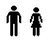
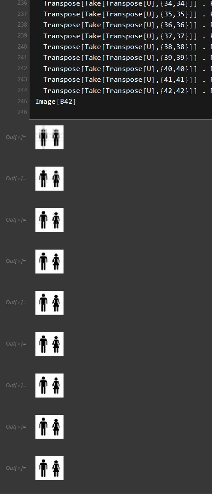

09
Aplicaciones de la SVD y compresión de imágenes
Un solo teorema —la mejor aproximación de rango bajo— explica la presencia de la SVD en casi toda la ingeniería. Al final, el ejercicio que lo vuelve visible en una imagen.
1El teorema del que cuelga todo
Sea \(A=\sum_{i=1}^{r}\sigma_iu_iv_i^{T}\) la expansión diádica del tema 06, y sea \(A_k\) la suma truncada en el término \(k\). El teorema de Eckart–Young–Mirsky dice que \(A_k\) es la mejor aproximación de rango \(k\) que existe, y lo es simultáneamente en dos normas:
$$\min_{\operatorname{rango}(B)\le k}\lVert A-B\rVert_F=\lVert A-A_k\rVert_F =\sqrt{\sum_{i>k}\sigma_i^{2}},\qquad \min_{\operatorname{rango}(B)\le k}\lVert A-B\rVert_2=\sigma_{k+1}$$
Ese único enunciado explica la presencia de la SVD en prácticamente todas las ramas de la ingeniería. Lo que cambia de una aplicación a otra no es la matemática, sino el significado de la matriz.
Para contar cuántas cosas hay: el rango numérico cuenta especies químicas, fuentes de contaminación, modos estructurales o el orden de un sistema dinámico. Para separar lo que importa de lo que estorba: los subespacios generados por \(U\) y \(V\) dividen señal de ruido, tejido de sangre, flujo de clutter. Para domar un problema inverso mal planteado: el truncamiento del espectro impide que el ajuste persiga el ruido.
2Un recorrido por áreas
El catálogo del curso reúne alrededor de noventa aplicaciones vigentes en dieciséis áreas. Marca con estrella aquellas en las que la SVD es constitutiva —si se retira, el método desaparece— frente a aquellas en las que es una herramienta entre varias. Estos son los casos que más vale la pena conocer.
Inteligencia artificial. La adaptación de bajo rango de modelos de lenguaje —LoRA y sus variantes espectrales— inicializa o restringe los adaptadores usando las componentes principales de la matriz de pesos, y el espectro decide qué direcciones se congelan. La compresión de la caché de claves y valores en inferencia ataca directamente el cuello de botella de ancho de banda de memoria. El análisis semántico latente es el antecedente histórico de todo esto, y el blanqueo de embeddings antes de indexarlos en una base vectorial es hoy paso estándar.
Álgebra lineal numérica. La pseudoinversa del tema anterior, la regularización de problemas inversos por truncamiento espectral y Tikhonov, la determinación robusta del rango en presencia de ruido de redondeo, y los mínimos cuadrados totales, para cuando el error afecta también a la matriz de diseño y no sólo al vector de observaciones.
Visión y geometría. El problema de Procrustes ortogonal —el algoritmo de Kabsch— alinea nubes de puntos y se usa igual en registro de piezas que en superposición de estructuras proteicas. Las matrices esencial y fundamental de la geometría epipolar salen del vector singular mínimo.
Comunicaciones. La precodificación MIMO usa la SVD de la matriz de canal para diagonalizarlo en subcanales independientes, sobre los que se reparte potencia. Es parte operativa de 5G.
Redes y logística. La matriz de tráfico origen–destino por tiempo es empíricamente de rango bajo, lo que permite medir la red con menos sondas; y el modelo «rango bajo más disperso» separa el tráfico nominal de las anomalías.
3Las advertencias
El catálogo termina con siete notas de rigor, y son la parte más instructiva porque distinguen lo publicado de lo desplegado.
Marcas de agua. Existe una literatura enorme sobre insertar marcas en los valores singulares de una imagen, pero buena parte de esos esquemas es vulnerable al ataque de ambigüedad: como los vectores singulares llevan la información estructural, un atacante puede reclamar autoría presentando sus propias \(U\) y \(V\). La aplicación es real; la seguridad reclamada, con frecuencia no.
Los valores singulares no reconocen rostros. Un resultado clásico muestra que los \(\sigma_i\) por sí solos contienen poca información útil para el reconocimiento facial, y que lo relevante está en las dos matrices ortogonales. Sirve como recordatorio de que \(\Sigma\) registra magnitudes, mientras que \(U\) y \(V\) registran la geometría.
Lo que se implementa rara vez es la SVD exacta. En sistemas de recomendación a escala no se calcula la descomposición completa de la matriz usuario–artículo, que además está mayoritariamente vacía: se optimiza con mínimos cuadrados alternados o descenso estocástico sobre las entradas observadas. El objetivo sigue siendo la aproximación de rango bajo; el método, no.
El costo importa. La SVD densa cuesta \(O(\min(m^{2}n,mn^{2}))\), prohibitivo para las matrices del aprendizaje profundo. Las versiones truncada, aleatorizada e incremental no son refinamientos académicos: son la condición de posibilidad de casi todo lo anterior.
4Compresión de imágenes: el ejercicio
La aplicación que vuelve visible el teorema es la compresión. Una imagen en escala de grises es una matriz: cada entrada, la intensidad de un pixel. Truncar su SVD en el término \(k\) da la mejor imagen de rango \(k\) que existe.

Cargada y convertida a matriz, esta imagen resulta tener rango 35, no 42: ya venía con estructura redundante antes de comprimir nada. Su espectro cae a plomo — \(\sigma_1\approx 37{,}9\) mientras que \(\sigma_2\approx 8{,}7\)— y eso es exactamente lo que hace que el truncamiento funcione.
| k | energía retenida | error relativo | números guardados | frente a 2058 |
|---|---|---|---|---|
| 3 | 97.62 % | 15.43 % | 276 | 13 % |
| 6 | 99.29 % | 8.44 % | 552 | 27 % |
| 8 | 99.74 % | 5.09 % | 736 | 36 % |
| 10 | 99.92 % | 2.79 % | 920 | 45 % |
| 12 | 99.98 % | 1.43 % | 1104 | 54 % |
| 14 | 99.99 % | 0.84 % | 1288 | 63 % |
| 24 | 100.00 % | 0.04 % | 2208 | 107 % |
| 34 | 100.00 % | 0.00 % | 3128 | 152 % |
El punto de equilibrio está en \(k=2058/92\approx 22\). A partir de ahí el truncamiento ocupa más espacio que la imagen original, y los valores \(k=24\), \(34\) y \(42\) del cuaderno ya no comprimen nada: sirven para ver converger la reconstrucción, no para ahorrar. En una imagen grande el argumento se invierte por completo, porque \(mn\) crece como el producto mientras que \(k(m+n+1)\) crece como la suma. La compresión por SVD es una idea que sólo paga a escala.
5El código
El cálculo en Wolfram es directo. Se importa la imagen, se convierte a escala de grises y se extrae la matriz de intensidades:
A = Import[SystemDialogInput["FileOpen"]];
A = ColorConvert[A, "Grayscale"];
B = ImageData[A];
Dimensions[B]
MatrixRank[B]
U = Part[SingularValueDecomposition[B], 1];
S = Part[SingularValueDecomposition[B], 2];
V = Part[SingularValueDecomposition[B], 3];ImageData devuelve la matriz de
intensidades entre 0 y 1; MatrixRank es lo que revela que el rango real es 35.La reconstrucción de rango \(k\) es la suma de los \(k\) primeros términos \(\sigma_iu_iv_i^{T}\). En Wolfram, cada término se arma tomando la columna \(i\) de \(U\), la entrada \(i\) de la diagonal de \(S\) y el renglón \(i\) de \(V^{T}\):
(* un término de la expansión diádica: sigma_i * u_i * v_i^T *)
termino[i_] :=
Transpose[Take[Transpose[U], {i, i}]] .
Partition[Take[Diagonal[S], {i, i}], 1] .
Take[Transpose[V], {i, i}]
(* reconstrucción truncada de rango k *)
Bk = Sum[termino[i], {i, 1, k}];
Image[Bk]Sum;
el cálculo es idéntico.
Ese salto entre «el error numérico todavía es del 5 %» y «el ojo ya no nota la diferencia» es el punto del ejercicio. La norma de Frobenius mide todos los pixeles por igual; la percepción, no. Eckart–Young garantiza optimalidad en la norma, que no es lo mismo que optimalidad perceptual — y ésa es exactamente la razón por la que JPEG no usa SVD sino la transformada del coseno, con cuantización ajustada a la sensibilidad del ojo.
materialRecursos del tema
- svd-aplicaciones.pdf Catálogo razonado de unas noventa aplicaciones vigentes en dieciséis áreas, con las constitutivas marcadas, más siete notas de advertencia. 8 páginas 86 KB
- compresion-imagen-svd-comentado.wl El ejercicio completo, comentado por secciones: carga de la imagen, descomposición, ejemplo 3 × 3 y las nueve reconstrucciones truncadas. script 18 KB
- compresion-imagen-svd.wl El mismo código sin los comentarios de sección, tal como se entregó originalmente. script 18 KB
- compresion-imagen-original.png La imagen de partida, 49 × 42 en escala de grises. imagen 6 KB
- compresion-imagen-reconstrucciones.jpg Captura del cuaderno con las nueve reconstrucciones a rangos crecientes. imagen 96 KB
{kind=link}
{kind=link}
El catálogo de aplicaciones es material del Dr. José de Jesús Ángel Ángel, Facultad de Ingeniería, Universidad Anáhuac México. El ejercicio de compresión y su código son propios.